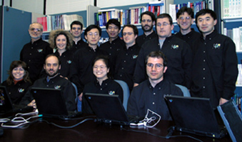

Participants in the Ptolemy Project


The Ptolemy and Tycho projects take their names from these historical figures:
- Claudius Ptolemaeus
- Astronomer
- Ptolemy II
- Egyptian King
- Tycho Brahe
- Astronomer
- Edward A. Lee
(eal@eecs.berkeley.edu)
- Director
- Christopher Hylands
(cxh@eecs.berkeley.edu)
- Ptolemy manager, release management, Tcl/Tk, Java,
Tycho, system administration
- Nuala Mansard
(nuala@eecs.berkeley.edu)
- Administrative Assistant
- Mary P. Stewart
(marys@eecs.berkeley.edu)
- System administration
- Joern Janneck
- Post Doc
- John Reekie
- Researcher
- Kees Vissers
- Visiting Industrial Fellow
- J. Adam Cataldo
(acataldo@eecs.berkeley.edu)
- Soft Walls
- Chris Chang
(cbc@eecs.berkeley.edu)
- Real-time Signal Processing
- Elaine Cheong
(celaine@eecs.berkeley.edu)
- Embedded Systems
- Xiaojun Liu
(liuxj@eecs.berkeley.edu)
- Embedded Systems
- Stephen Neuendorffer
(neuendor@eecs.berkeley.edu)
- Real-time Signal Processing
- Yuhong Xiong
(yuhong@eecs.berkeley.edu)
- Type System
- James Yeh
(jiahau@cs.berkeley.edu)
- Image and Video Processing
- Yang Zhao
(ellen_zh@eecs.berkeley.edu)
- Embedded Systems
- Haiyang Zheng
(hyzheng@eecs.berkeley.edu)
- Mobies Project
- Rachel Zhou (zhouye@eecs.berkeley.edu)
If you would like to work with the Ptolemy group, contact
Professor Edward A. Lee
- John Barry
(Georgia Institute of Technology
)
(john.barry@ee.gatech.edu)
- Optical communications, Ph.D. student 1986-1992.
- Shuvra S. Bhattacharyya
(University of Maryland at College Park) (
ssb@eng.umd.edu)
- Code generation, dataflow, scheduling, software synthesis.
Master's student 1987-1991 and Ph.D. student 1992-1994.
- Joseph T. Buck
(Synopsys, Inc.)
(jbuck@synopsys.com)
- Boolean dataflow, Ptolemy kernel, Linux port, ptcl, ptlang, scheduling,
Motorola DSP assembly code generation,
Ph.D. student 1989-1993.
- Wan-Teh Chang
(Netscape Communications)
- Hierarchical finite-state machine controllers, telecommunications software,
graphical user interfaces, higher-order functions, Ptolemy kernel, Tycho.
Ph.D. student, 1996.
- John Davis,
II
(davisj@eecs.berkeley.edu)
- Mutable systems, higher order functions, Ph.D. student 1994-2001.
- Stephen Edwards
(Synopsys)
(sedwards@eecs.berkeley.edu)
- Synchronous/Reactive domain, hierarchical finite state machines,
Statecharts, Esterel, Esterel compilers, Ph.D. student 1994-1997.
- Michael Goodwin
(mmg@yellowstone.esd.sgi.com)
- Audio signal processing, time-frequency analysis and synthesis,
computer music. Ph.D. student 1995-1998.
- Soonhoi Ha
(Seoul National University)
(sha@snucom.snu.ac.kr)
- Scheduling, dynamic dataflow, discrete-event domain, code generation,
Ph.D. student 1988-1992.
- Asawaree Kalavade
(Bell Labs)
(kalavade@bell-labs.com)
- Hardware/software partitioning and codesign, design methodology management,
Thor, Silage, and design methodology management domains, Ph.D. student 1990-1995.
- Bilung Lee<
/a>
(bilung@eecs.berkeley.edu)
- Image and video processing, telecommunications software, Ph.D. student 1994-
2000.
- Seungjun Lee
- Communicating processes domain, Thor domain. Ph.D. student 1989-1991.
- Jie Liu
(jieliu@parc.com)
- Mixed signal design, CT domain. Ph.D. student 1996-2002.
- Praveen K.
Murthy
(murthy@eecs.berkeley.edu)
- Scheduling, code generation, multidimensional dataflow, semantical issues in
dataflow. Master's and Ph.D. student 1991-1996.
- Thomas M. Parks
(http://cs.colgate.edu/faculty/parks/)
(tparks@colgate.edu)
- Real-time computing, process networks, higher-order functions, code generati
on in C domain, Ph.D. student 1990-1995.
- Gilbert C. Sih
- Parallel scheduling, interprocessor communication,
Ph.D. student 1987-1991.
- S. Sriram
(Texas Instruments)
(sriram@hc.ti.com)
- Parallel architectures, interprocessor communication, scheduling theory, Motorola DSP assembly code generation, Ph.D. student 1990-1995.
- Michael C.
Williamson
(michaelw@cadence.com)
- Generating timed circuits from dataflow graphs, VHDL modeling, VHDL domain,
Ph.D. student 1994-1999.
- Jim Armstrong
- Visiting Professor from Virginia Tech, January-June 2002.
- Bart Kienhuis(
GSRC)
(kienhuis@eecs.berkeley.edu)
- System level design using abstract modeling of architectures and applications, Post Doc 1998-2000.
- Johan Eker
- Cal actor language design, TM modeling. Post-doctoral Researcher 2001.
- Brian L. Evans
(The University of Texas at A
ustin)
(bevans@ece.utexas.edu)
- Algorithm design, multidimensional signal processing, educational software,
graphical user interfaces, Ptolemy Matlab/Mathematica interfaces, Tycho,
Post-Doctoral Researcher 1993-1996.
- Ichiro Kuroda
(NEC)
(kuroda@dsp.cl.nec.co.jp)
- Kernel development (parameter and state specification and parsing),
Visiting Industrial Fellow 1989-1990.
- James L. Lundblad
(jamesl@eecs.berkeley.edu)
- Developed Adaptive Computing Systems (ACS) domain with Sanders
Postdoctoral Researcher 1998.
- Farhad Mavaddat
- Visiting Professor (University of Waterloo, Ontario, Canada), 2000-2001.
- Yoshio Miki
(Hitachi, Ltd.)
(ymiki@eecs.berkeley.edu)
- Control logic generation, performance estimation of pipelines,
interface between the SDF and DE domains, Visiting Industrial Scholar 1995.
- Takashi Miyazaki
(NEC)
(tmiyazki@eecs.berkeley.edu)
- Real-time video signal processing, DSP architectures, Visiting Industrial Fellow.
- Sonia Sachs
(ssachs@eecs.berkeley.edu)
- Visiting Researcher, 2000-2001.
- Richard S. Stevens
(Naval Research Laboratory)
(stevens@ait.nrl.navy.mil)
- Models and multiprocessor scheduling of dynamic dataflow computation,
Processing Graph
Method Navy standard
- Win Williams
- Visiting Researcher, 2001-2002.
- Juergen Teich
(ETH-Zurich)
(teich@tik.ethz.ch)
- Scheduling, optimization, mixed synchronous/asynchronous systems,
Postdoctoral Researcher 1994.
- Jeff C. Bier
(Berkeley Design Technology, Inc.)
(jeff@bdti.com) Master's student, 1990-1992.
- Michael J. Chen
(Geoworks)
(mchen@geoworks.com)
- Multidimensional dataflow and signal processing,
Master's student 1993-1994.
- Rolando Diesta
(diesta@eecs.berkeley.edu)
- Discrete-event applications, networks, Master's student 1991-1995.
- Chamberlain Fong
(chf@eecs.berkeley.edu)
- visual simulation. Master's student 2000-2001.
- Martha Fratt
- Speech processing, Gabriel, Master's student 1989-1990.
- Ron Galicia
(rgalicia@earthlink.net)
- Embedded multicomputing, real-time computer vision and image processing,
hardware/software codesign. Master's student 1998-1999.
- Edwin E. Goei
(Sun)
(edg@eng.sun.com)
- Vem schematic interface. Master's student, 1988-1989.
- Mudit Goel
(mudit@desktop.com)
- Adaptive Digital Signal Processing; Master's student 1997-98.
- Mike Grimwood
- Digital infrared communication links, Gabriel, Master's student 1989-1990.
- Eric Guntvedt
- Gabriel. Master's student, 1987-1988.
- Holly Heine
- Graphical user interface in Gabriel. Master's student 1986-1987.
- Wei Hung Ho
- Gabriel demonstrations. Master's student 1987-1988.
- Steve How
- Code generation, multirate systems, Gabriel, Master's student 1989-1990.
- Joel King
(jking@eecs.berkeley.edu)
- Spice domain, mixed-signal simulation and IC design, Tycho,
Master's student 1995-1996.
- Allen Lao
(Applied Signal Technology)
(ayl@appsig.com)
- Message queue domain, ATM network simulations (video). Master's student 1992-1993.
- Phil D. Lapsley
(Berkeley Design Technology, Inc.)
(phil@bdti.com)
- Dataflow modeling, Motorola DSP assembly code generation, workstation and DS
P board interfaces, Gabriel,
Master's student 1990-1991.
- Brian Mountford
- Gabriel. Master's student 1987-1988.
- Lukito Muliadi
(lmuliadi@eecs.berkeley.edu)
- Discrete-event modeling and simulation; Master's student 1998-99.
- Maureen O'Reilly
- Motorola DSP assembly code generation in Gabriel, modem design,
Master's student 1989-1990.
- José Luis Pino
(Agilent Techno
logies, EEsof EDA)
(jpino@agilent.com)
- Agilent Ptolemy, Mixed signal simulation & verification, Multiprocessor
scheduling, code generation for heterogeneous DSP systems, hierarchical scheduling. Master's student 1994-1996.
- Farhana Sheikh
(farhana@eecs.berkeley.edu)
- Visual design methodology for real-time systems, parallel and distributed
processing, and video signal processing, Master's student 1995-1996.
- Sun-Inn Shih
- Real-time video signal processing, code generation,
Master's student 1993-1994.
- Neil Smyth
(Altio)
(NSmyth@ALTIO.com)
- Redevelopment of Ptolemy kernel in Java, Master's student 1997-98.
- Jeffrey C. Tsay
(jctsay@netscape.net)
- Mathematical algorithms for signal processing, multimedia applications,
Java Code Generation,
Master's student 1998-2000.
- Brian K. Vog
el
(vogel@eecs.berkeley.edu)
- Signal Processing, Master's student 2000-2001.
- Gregory S. Walter
- ATM networks, speech coding, Master's student 1991-1992.
- Patrick J. Warner
(pow@eecs.berkeley.edu)
- Parallel processing, interprocessor communication,
network of workstations target. Master's student 1997.
- Paul Whitaker<
/a>
(pwhitake@eecs.berkeley.edu)
- Synchronous/Reactive domain, User Interface, Master's student 2001.
- Kennard D. White (Diva Communications)
(kennard@diva.com)
- C and Motorola DSP assembly code generation, CM5 target,
user interfaces: tkoct and Xpole,
filter design, Master's student 1989-1993.
- Andria Wong
- Gabriel. Master's student 1987-1988.
- Anthony Wong
- Assembly code generation in Gabriel, Master's student 1991-1992.
- Bicheng William Wu
(wbwu@eecs.berkeley.edu)
- Design of interactive digital signal processing tool
Master's student 1997-99.
- Mei Xiao
(Tyecin Systems Inc.)
(xmei@tyecin.com)
- Image processing, graphical user interfaces, Master's student 1993-1995.
- Raza Ahmed (Tektronix Inc.)
(razaa@master.cna.tek.com)
- Heuristic search packages for Mathematica, implementation cost target,
Undergraduate researcher 1996.
- Kang Ngee Chia
(UCLA)
(kangngee@ee.ucla.edu)
- Code generation in C, Undergraduate Researcher Summer 1995.
- Steve X. Gu
(Nortel, formerly Northern Teleco
m)
(stevegu@ntmtv.com)
- Tcl/Tk interface to Mathematica, educational software,
software for wireless communications systems,
Undergraduate Researcher 1994-1995.
- Luis Gutierrez
(luisgm@.eecs.berkeley.edu)
- Motorola 56000 Code Generation Stars, Texas Instruments C50 Domain,
real-time video processing in embedded systems,
Undergraduate Researcher 1996-1997.
- Wei-Jen Huang
(Stanford University)
- Graphical user interface, Undergraduate Researcher 1994.
- Farhad Jalilvand
(Intel)
(farhad_jalilvand@intel.com)
- Communications demonstrations and subsystems, Undergraduate Researcher 1995.
- David Chun-Keung Lee
- Localization of experimental vehicles using computer vision, Undergraduate researcher, 2001-2002.
- Yu Kee Lim
(yukee@mho.eecs.berkeley.edu)
- Software quality (debugging and documentation), developing new CGC stars,
matrix support for code generation domains, ptdsp library,
Undergraduate student researcher 1996.
- Matthew Tavis
(Sapient)
(mtavis@sapient.com)
- Graphical user interfaces, Tycho, Undergraduate researcher 1995-1996.
- Warren W. Tsai
- VHDL modeling, Undergraduate Researcher 1995.
- Paul Yang
- Localization of experimental vehicles using computer vision. Undergraduate researcher 2001-2002.
- Zoltan Kemenczy
(Research in Motion, Ltd.
(mailto:zkemenczy@rim.net)
- Ptolemy II Matlab Expression Actor, Expression Actor rework.
- Sean Simmons
(mailto:SSimmons@rim.net)
- Jens Voigt
(voigtje@ifn.et.tu-dresden.de)
(Dresden University of Technology Communications Laboratory)
- Dynamic Higher Order Functions in the DE Domain, C++ Ptolemy/Java interface.
- Michael Wirthlin
- JHDL/Ptolemy II Interface
(
http://www.ee.
byu.edu/faculty/wirthlin/)
(wirthlin@ee.byu.edu)
- Egbert Ammicht (AT&T)
(E.Ammicht@att.com)
- DSP3 code generation.
- Anindo Banerjea
(banerjea@cs.berkeley.edu)
- Discrete-event scheduling.
- Neal Becker
(Comsat Laboratories)
(Neal.Becker@comsat.com)
- HP and Linux port, incremental linking development, user contributed stars.
- Michael Bosse
(Boston University)
(zanj@bu.edu)
- Tcl/Tk visualization in the IPUS domain
(Integrated Processing and Understanding of Signals).
- Rachel Bowers
- Ptolemy demonstrations.
- Bill Bush
- Vem schematic interface.
- Andrea Casotto
- Vem schematic interface.
- William Chen
(Columbia University)
(bchen@ctr.columbia.edu)
- Native signal processing on the UltraSparc.
- Cliff Cordeiro
(cliffc@eecs.berkeley.edu)
- Interactive documentation.
- Gyorgy Csertan
(Technical University of Budapest)
- Converted Ptolemy 0.5.1 documentation to on-line hypertext HTML format.
- Peter Dufault
(HD Associates, Inc.)
(dufault@hda.com>)
- FreeBSD port.
- Chandan Egbert
- Beta testing.
- Yair Enden
(Motorola)
- Fix-point blocks in the CGC domain.
- Dirk Forchel
(Technical University Dresden, Fraunhofer Institute for Integrated Circuits)
(df2@inf.tu-dresden.de and
forchel@eas.iis.fhg.de)
- Code Generation for the Dynamic Dataflow Domain (CGDDF) and Linux port.
- Erick Hamilton
- Ptolemy Demonstrations. Graduate student 1978.
- Richard Han
(rhan@eecs.berkeley.edu)
- Discrete-event applications,
encryption in high error-rate applications,
The Infopad Project
.
- David Harrison
- Vem schematic interface.
- Paul E. Haskell
(Compression Labs)
- Image processing, video processing, and networks.
- Fritz Heinrichmeyer
(FernUniverstitat at Hagen)
(fritz.heinrichmeyer@fernuni-ha
gen.de)
- Code generation domain for the TMS320C50 DSP processor.
- Roger Hillson
(Naval Research Laboratory)
(hillson@ait.nrl.navy.mil)
- Dataflow, VHDL domains.
- Sangjin Hong
(sangjin@mho.eecs.berkeley.edu)
- Heterogeneous architecture design and simulation,
communicating process domain.
- Chih-Tsung Huang
- Motorola DSP assembly code generation.
- Michael Huang
(Boston University)
(ghuang@bu.edu)
- islang preprocessor for stars in IPUS domain (Integrated Processing and Unde
rstan
ding of Signals).
- Alan Kamas
(Independent Consultant)
(aok@holonet.net)
- User Interface Design, Software Development, Project Manager 1991-1995
Alireza Khazeni
- Implementing fixed-point arithmetic and stars.
- Karim Khiar (Thomson CSF
)
(khiar@airsys.thomson.fr)
- Radar and higher-order functions, Visiting Master's student 1994.
- John Loh
- Message queue domain, ATM networks.
- Seehyun Kim
(shark@hdtv.snu.ac.kr)
- Fixed-point computation.
dt>Ed Knightly
(U.C. Berkeley)
(knightly@cs.berkeley.edu)
- Discrete-event scheduling, networks, Ph.D. student 1991-1996.
- Alexander Kurpiers
(Technical University of Darmstadt, Germany)
- AIX port.
- Tom Lane
(Structured Software Systems)
(tgl@sss.pgh.pa.us)
- HP Port, many improvements to pigi and the kernel.
- Steven P. Levitan (Department of Electrical Engineering, University of Pittsburgh)
(steve@ee.pitt.edu)
- Computer Aided Design and Simulation of Free Space Optoelectronic Information Processing Systems
- William Li
(wli@eecs.berkeley.edu)
- Collaborating instances of Ptolemy,
The Infopad Project
.
- David G. Messerschmitt
- Professor, and Acting Dean, SIMS
messer@eecs.berkeley.edu
- Rajagopal Nagarajan
(Department of Computing, Imperial College, London )
(R.Nagarajan@doc.ic.ac.uk)
- Logic, concurrency, programming language semantics, specification and
verification.
- Douglas Niehaus
(University of Kansas)
- xxx domain, Tcl/Tk interface, pigi/oct interface.
- Eric K. Pauer
(Sanders, a Lockheed Martin Compa
ny)
(pauer@sanders.com)
- Adaptive Computing Systems (ACS) domain, Architecture Trade Application.
- Johnathan
Reason
(U.C. Berkeley)
(reason@mho.eecs.berkeley.edu)
- NetBSD port, video coding over wireless networks,
asynchronous video coding,
The Infopad Project
.
- Wolfgang Reimer
(Technical University of Ilmenau, Germany)
(reimer@e-technik.tu-ilmenau.de<
/a>
- Linux Ports.
- Sunil Samel
(IMEC)
(samel@imec.be)
- HP port.
- Christopher Scannell
(Naval Research Laboratory)
- Beta testing.
- Mario Jorge Silva
(Enterprise Integration Technologies)
(msilva@eit.com)
- User interfaces.
- Rick L. Spickelmier
- Vem schematic interface.
- Richard Tobias
(White Eagle Systems Technology
)
(rjjt@westinc.com)
- Solaris port.
- Stefan De Troch
(IMEC)
(detroch@imec.be)
- HP port.
- Alberto Vignani
- Linux port.
vier Warzee (Thomson C
SF)
(warzee@sctf.thomson-csf.fr)
- ArrayOL domain, IBM RS/6
000 port, Ptolemy evaluation.
- Anders Wass
- Thor domain.
- Joseph M. Winograd
(Boston University)
(winograd@bu.edu)
- Knowledge-based signal processing,
IPUS (Integrated Processing and Understanding of
Signals) domain.
- Chris Yu
(Naval Research Laboratory)
- Matrix representations.
Last Updated: $Date$
{kind=link}
{kind=link}